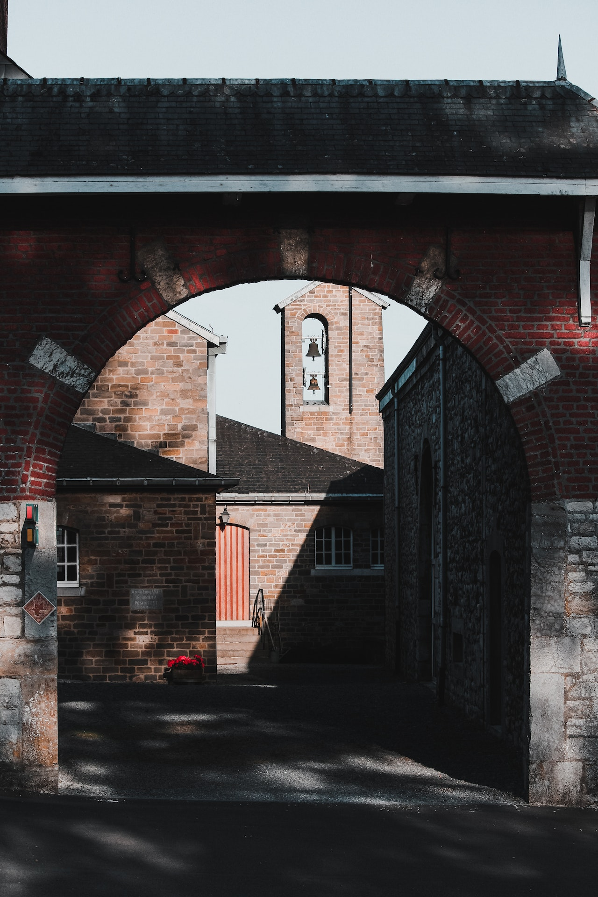
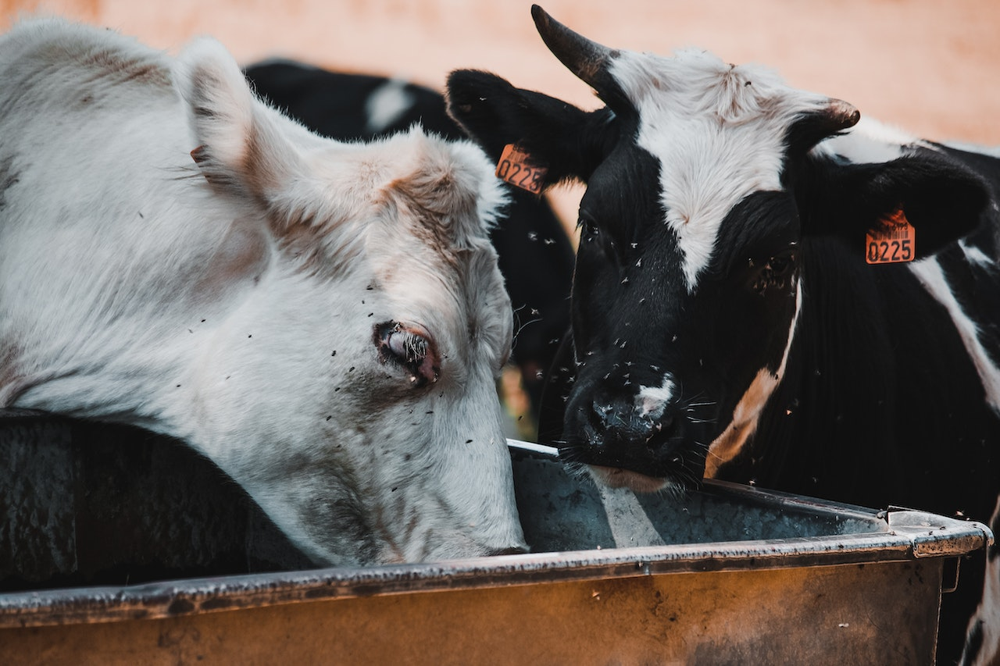
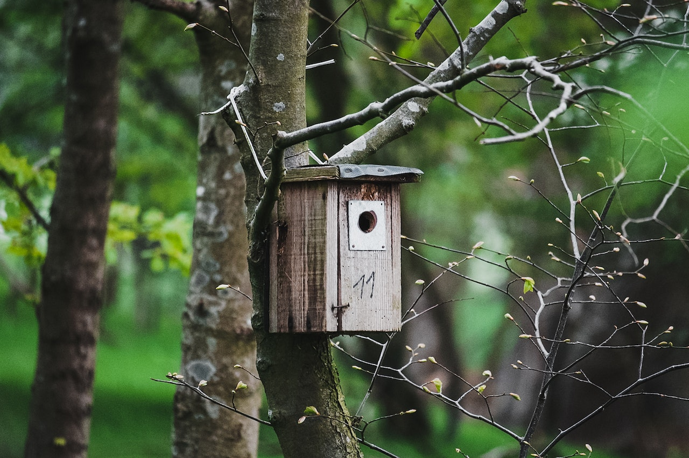
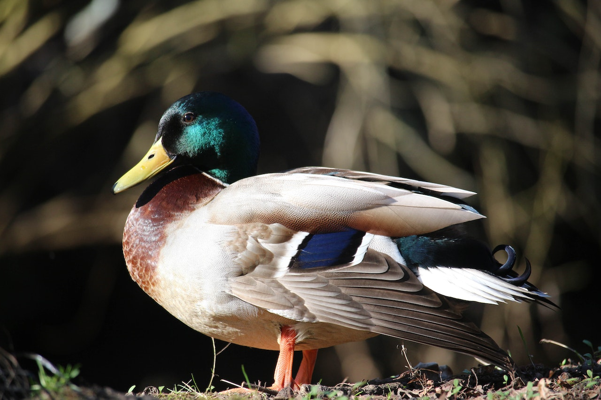
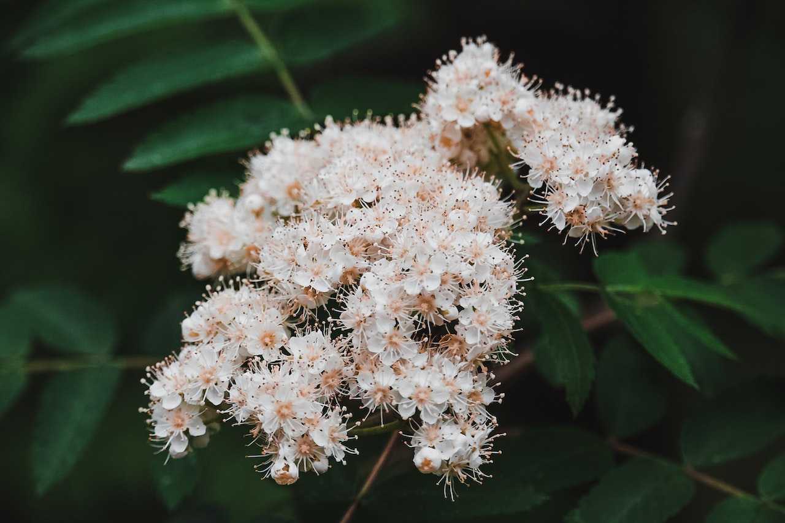

Fotografie
Sinds een jaar of twee ben ik fotografie aan het doen in zijn voltijds. Regelmatig na school duik ik de natuur in om foto’s te maken. Zo ga ik ook regelmatig in het weekend of als ik mij eigen wat slechter voel en mijn gedachten wil verzetten. Met behulp van mijn Canon EOS 650D camera kan ik mooie shots maken. Zelf heb ik ook een handvol lenzen die mij daar mee helpen. Van macro tot zoom lensen.
   Soorten fotografie
Voornamelijk hou ik mij zelf bezig met natuurfotografie. Maar uiteraard zijn er nog veel verschillende soorten fotografie die gevolgt kunnen worden zoals:
- Natuur fotografie
- Portret fotografie
- Straat fotografie
- Landschap fotografie
- Sport fotografie
- ...
Photoshop/Ligtroom

Na zo een zes tot zeven jaar photoshop te doen heb ik nu ook lightroom er bij genomen. Fotografie is heel handig te verbeteren in lightroom. Photoshop leer ik ook nog altijd bij. Ik zie het als een studie om bij te leren maar ook als een plezier. Je kunt alle kanten op met lightroom om foto’s tot zijn top kwaliteiten te brengen en de mogelijkheden die photoshop biedt met het alteren van foto’s geeft je uren tijd om bezig te zijn.
Gamen
Hobbies is niks zonder gamen. Na een lange avond werken voor school of andere activiteiten is gamen af en toe relaxgevend. Natuurlijk kan het ook de volledig andere kant op gaan en eindig je in frustratie. Maar het hangt er net vanaf in welke genre je gaat. Een paar jaar geleden speelde ik zo een 20 tot 40 uur zeker spellen. De laatste jaren is het zwaar verminderd naar 0 tot 20 uur. Natuurlijk blijf ik het altijd wel weer fijn vinden om terug een spel te spelen alleen of met vrienden waarbij je goed kunt lachen.
| Spel | Uren |
|---|---|
| Rainbow Six Siege | 691u |
| Rocket League | 562u |
| Wurm Unlimited | 459u |
| Arma 3 | 225u |
| Euro Truck Simulator 2 | 139u |
| PUBG: Battlegrounds | 120u |
| Space engineers | 112u |